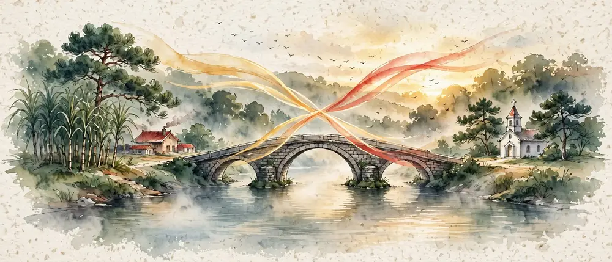
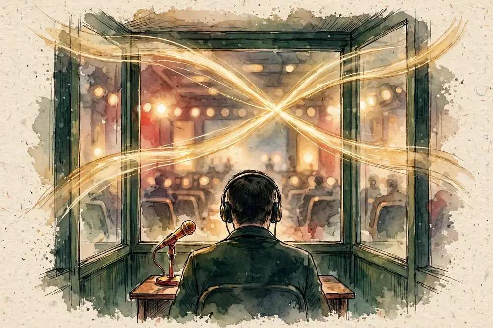
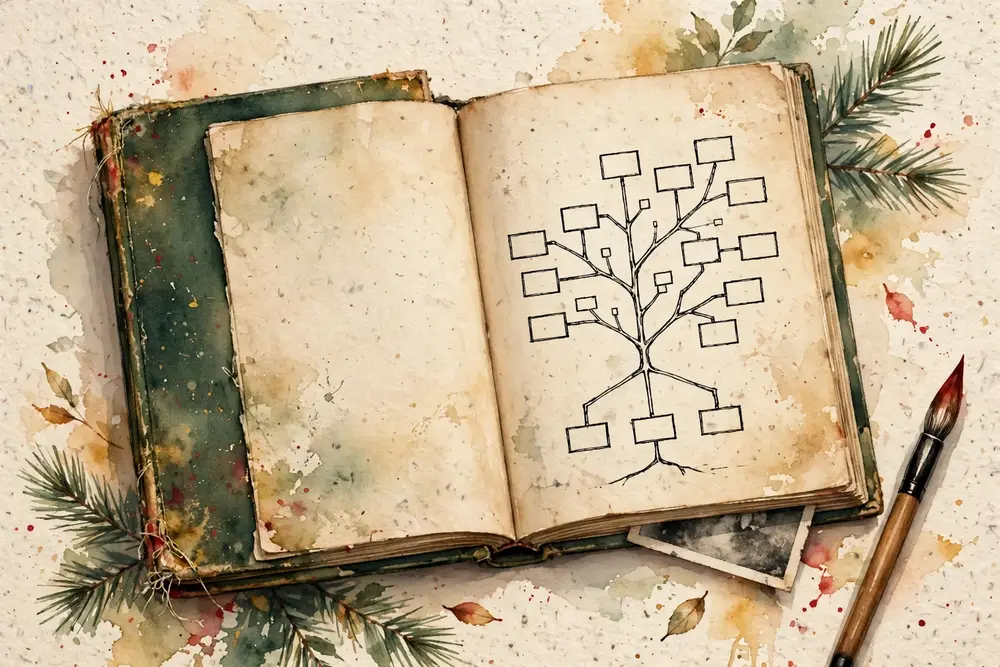
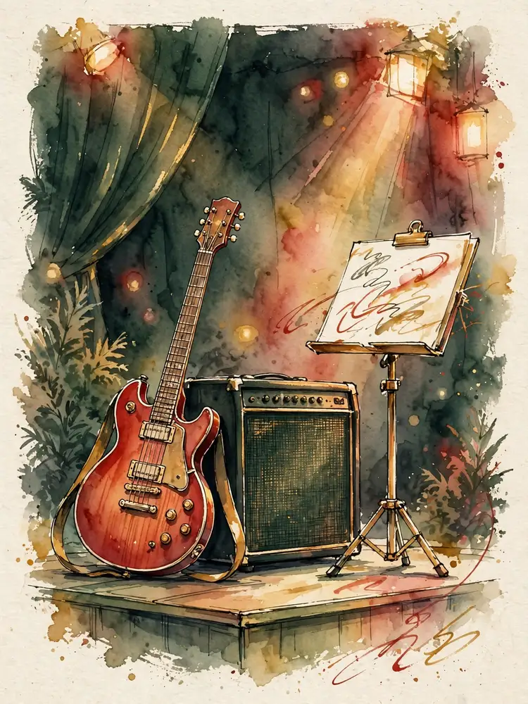

傅恩平個人品牌網頁・插畫提示詞紀錄
本頁記錄 8 張 AI 概念插畫的生成提示詞與驗收結果。風格鎖定：水彩＋水墨、米紙質感、深松綠＋暖金＋硃紅；一律不出現可辨識文字、不出現人臉。重出 1 張（IMG-004 第一版人物髮型為女性髮髻，已重畫為短髮男性背影）。
IMG-001・雙語之橋（首屏）
Warm editorial watercolor and ink illustration on textured rice paper, deep pine green, warm gold and cinnabar red palette, soft morning light. A graceful stone arch bridge crossing a calm river at dawn, mist over the water; on the left riverbank a grove of sugarcane and a small red-tile farmhouse, on the right riverbank a small white country chapel with a cross on its steeple; golden sunrise light, birds in the sky, two flowing ribbons of light meeting above the bridge suggesting two languages joining. Wide panoramic composition, gentle hopeful mood, no people, no readable text, no letters, no words.

IMG-002・書齋案頭（關於）
Warm editorial watercolor and ink illustration on textured rice paper, deep pine green, warm gold and cinnabar red palette, soft lamplight. A quiet scholar's wooden desk by a window at dusk: an open manuscript book with two columns of elegant illegible flowing script lines, a fountain pen resting on paper, round reading glasses, a small cinnabar-red seal stone, a lit brass desk lamp, a stack of old books, cozy study atmosphere. No people, no readable text, no letters, no words.
IMG-003・善化甘蔗田（關於）
Warm editorial watercolor and ink illustration on textured rice paper, deep pine green, warm gold and cinnabar red palette, soft morning light. Sugarcane fields of the Tainan plain at early morning, rows of tall sugarcane fading into golden mist, a line of wooden utility poles, a small white country church with a cross in the far distance, a red-tile farmhouse, warm sunrise glow, peaceful rural Taiwan landscape. Wide panoramic composition, no people, no readable text, no letters, no words.

IMG-004・口譯間（服務）
第一版人物髮型誤為女性髮髻，已重畫。採用版提示詞：Warm editorial watercolor and ink illustration on textured rice paper, deep pine green, warm gold and cinnabar red palette. A conference interpreter's booth seen from behind: a man with short dark hair seen only from the back, wearing headphones, seated at a small desk with a microphone, warm stage lights and a blurred conference hall beyond the glass, two flowing ribbons of golden light crossing in the air suggesting translation between two languages. Cinematic warm tones, face not visible, no readable text, no letters, no words.

IMG-005・族譜（家族）
Warm editorial watercolor and ink illustration on textured rice paper, deep pine green, warm gold and cinnabar red palette. An aged yellowed genealogy record book with a worn cloth cover, lying open to reveal a family tree diagram drawn in fine ink lines with small blank seal-stamp squares, an ink brush resting beside it, warm archival light, a faded old black-and-white family photograph corner visible. No people faces, no readable text, no letters, no words.

IMG-006・鋼琴聖詩（教會音樂）
Warm editorial watercolor and ink illustration on textured rice paper, deep pine green, warm gold and cinnabar red palette. An upright piano with open hymn sheet music showing only abstract note shapes, sunlight through a window, music notes drifting as golden light, a pair of small children's shoes beside the piano bench, warm home scene. No people, no readable text, no letters, no words.

IMG-007・台語搖滾（教會音樂，直式）
Warm editorial watercolor and ink illustration on textured rice paper, deep pine green, warm gold and cinnabar red palette. An electric guitar leaning against an amplifier on a small stage, warm stage lights, a handwritten lyric manuscript with illegible flowing script on a music stand, red and gold stage glow, energetic yet warm. No people, no readable text, no letters, no words.

IMG-008・齋房夜燈（榮益齋）
Warm editorial watercolor and ink illustration on textured rice paper, deep pine green, warm gold and cinnabar red palette. A small study room at night, a single warm lamp on a desk with stacked books in two languages, a cup of tea with steam, a window showing the moon and a pine silhouette, quiet contemplative mood. No people, no readable text, no letters, no words.

真實照片 4 張（取自本人公開 YouTube 頻道影片截圖）：photo-summer（2023 夏季學校）、photo-sundayschool（主日學）、photo-family（安元堂家族史影片畫面）、photo-shepherd（善牧恩慈歌影片畫面）。詳見 images.json。